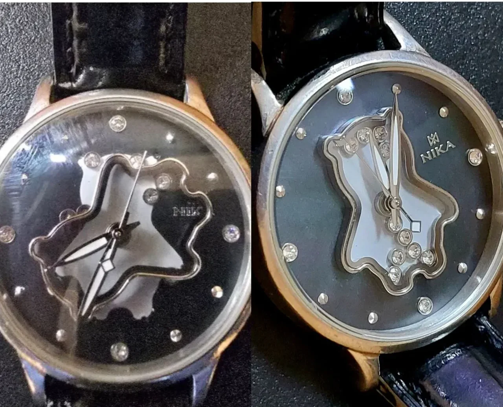
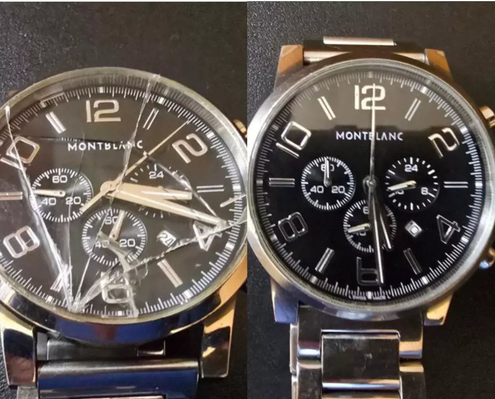
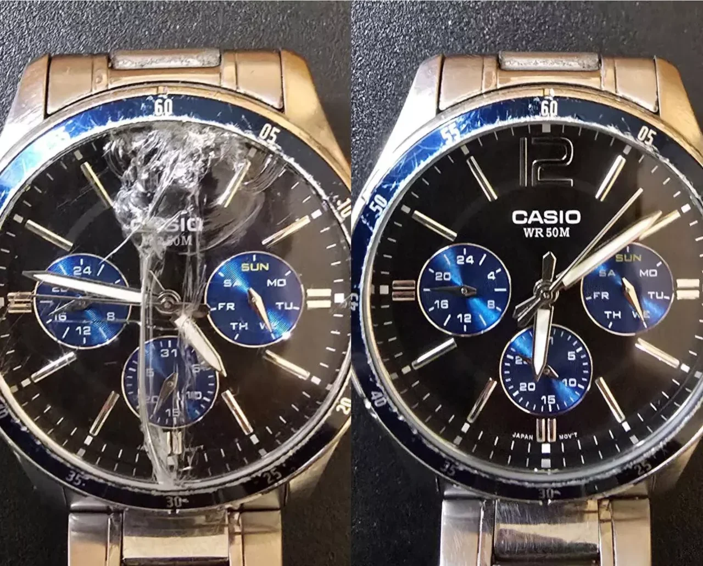
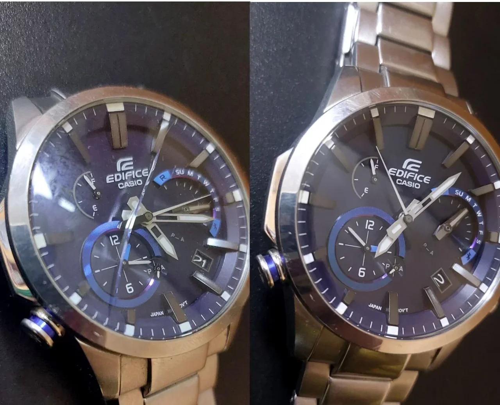
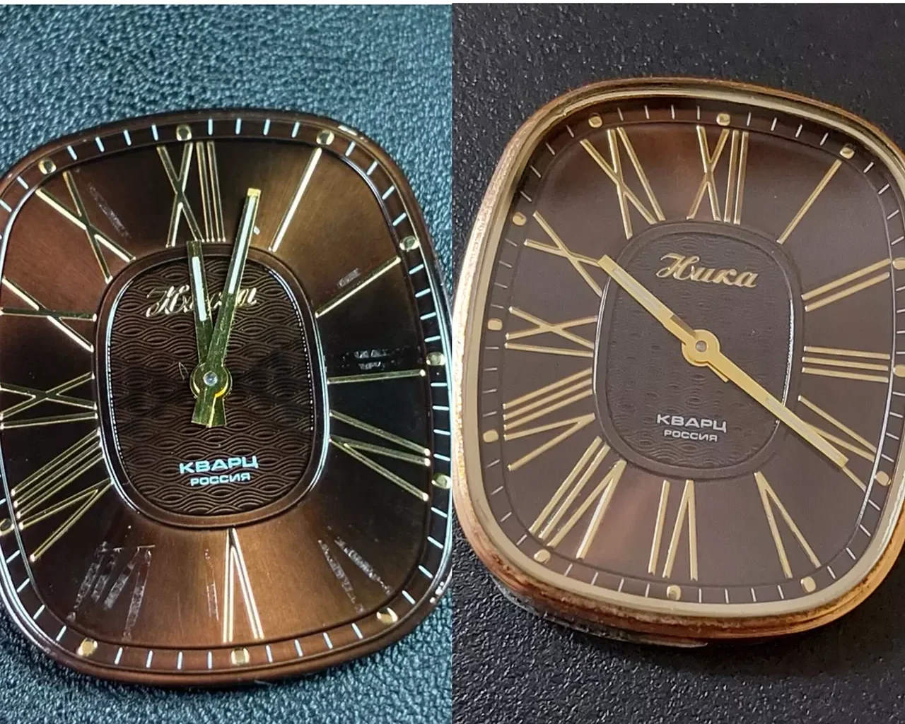
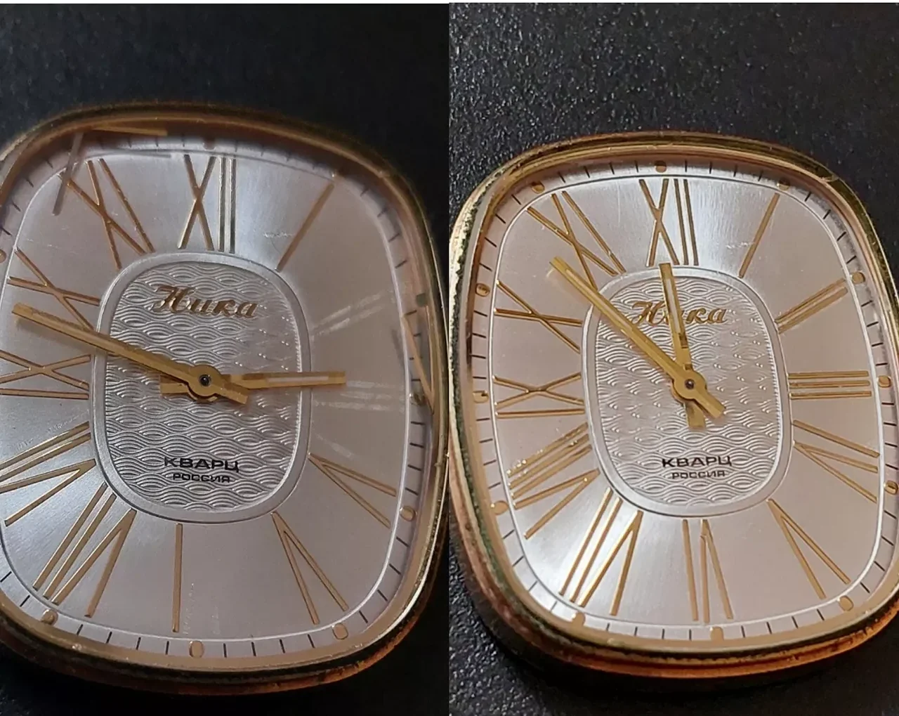

Замена батарейки и аккумулятора
Замена элемента питания в кварцевых часах и аккумулятора в Casio, G-Shock, Seiko, Citizen. Проверка герметичности до и после работ.
Замена батарейки, стекла и ремешка, репассаж и ремонт механизма. Авторизованный сервисный центр «Сибвоч» — работаем с 2006 года, обслуживаем часы 50+ брендов.
Проверяем герметичность до и после замены батарейки · Замена стекла от 1–2 дней · скидка 10% на замену стекла по заявке
Отремонтировать часы в Новосибирске можно в сервисном центре «Сибвоч» (SibWatch, работает с 2006 года). Здесь выполняют замену батарейки в часах, замену стекла, подбор и замену ремешка, репассаж и ремонт механизма. Это авторизованный сервисный центр по 50+ брендам: Casio, Seiko, Citizen, Fossil, Diesel, Sokolov, Ника, Candino, Romanson и другим.
Сервисный центр находится по адресу г. Новосибирск, ул. Писарева, 60 (отдельный вход с правого торца), телефон +7 (383) 211-92-80. Часы работы: ПН–ЧТ 10:00–19:00, ПТ 10:00–18:00, обед 13:00–14:00, СБ–ВС выходной.
Только ремонт и обслуживание часов. Что именно нужно вашим часам — определит мастер после осмотра.
Замена элемента питания в кварцевых часах и аккумулятора в Casio, G-Shock, Seiko, Citizen. Проверка герметичности до и после работ.
Подбор и установка стекла (минеральное, сапфировое), сохранение герметичности, работа без пыли и соринок. Срок от 1–2 дней.
Подбор ремешка по размеру и цвету, установка и подгонка браслета, ультразвуковая мойка. 15+ цветов, все размеры.
Полная разборка, чистка, смазка и сборка механизма, регулировка точности хода. Для механических и люксовых часов.
Замена уплотнителей, проверка водозащиты, ремонт после попадания воды. Ремонт переводных головок и корпусов.
Полировка корпуса и браслета, восстановление родиевого покрытия, ремонт циферблата, ремонт браслета.
Фотографии «до и после» ремонта. Передвиньте ползунок, чтобы посмотреть результат.






Точную стоимость мастер называет после осмотра часов — она зависит от модели и состояния механизма. Диагностика стоимости ремонта бесплатна.
| Услуга | Срок | Стоимость |
|---|---|---|
| Замена батарейки (элемента питания) | в день обращения | от ___ ₽ |
| Замена аккумулятора (Casio, G-Shock, Seiko, Citizen) | 1–3 дня | от ___ ₽ |
| Замена стекла −10% | от 1–2 дней | от ___ ₽ |
| Подбор и замена ремешка | в день обращения | от ___ ₽ |
| Установка и подгонка браслета, ультразвуковая мойка | в день обращения | от ___ ₽ |
| Репассаж механических часов | по диагностике | от ___ ₽ |
| Ремонт механизма часов | по диагностике | от ___ ₽ |
| Восстановление герметичности, замена уплотнителей | по диагностике | от ___ ₽ |
| Полировка корпуса и браслета | по диагностике | от ___ ₽ |
Цены-заглушки от ___ ₽ будут заменены на актуальный прайс.
Обслуживаем часы и других брендов — список марок меняется и дополняется.
Оставьте заявку на сайте или позвоните — опишите проблему.
Мастер осматривает часы и называет точную стоимость и срок.
Работы выполняются с оригинальными запчастями и оборудованием.
Проверка результата и гарантия на выполненные работы.
Нажмите на вопрос — ответ плавно раскроется.
Приём и выдача часов, подбор ремешков и браслетов.